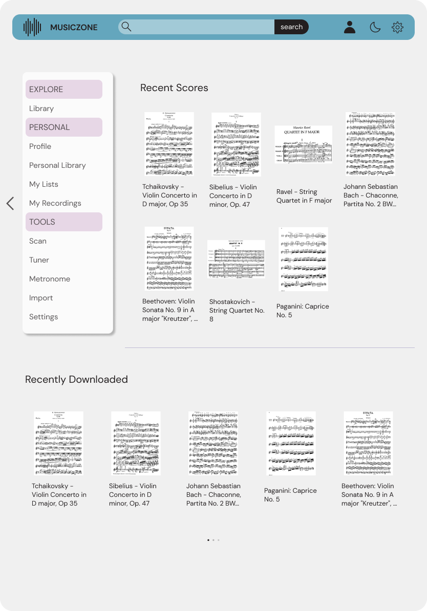
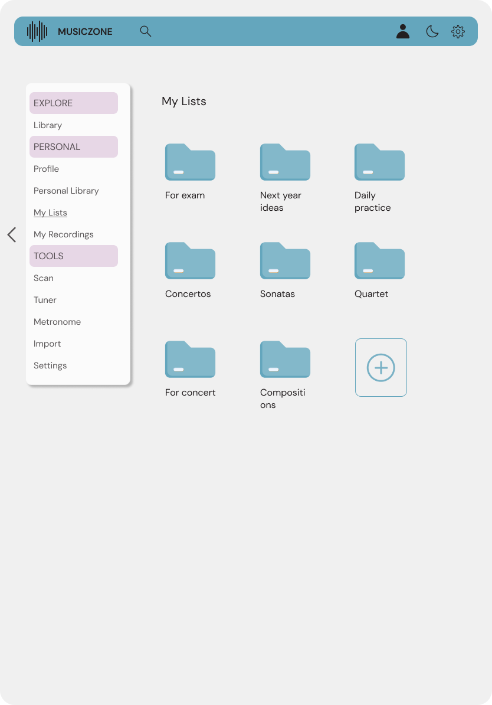
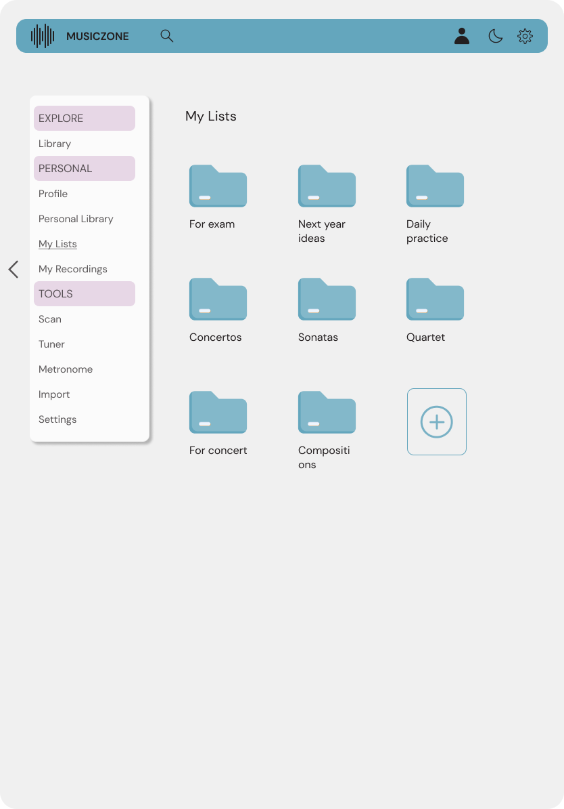
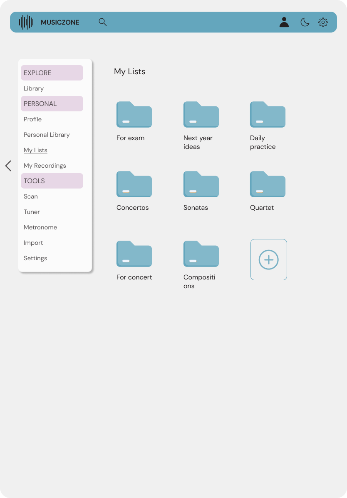
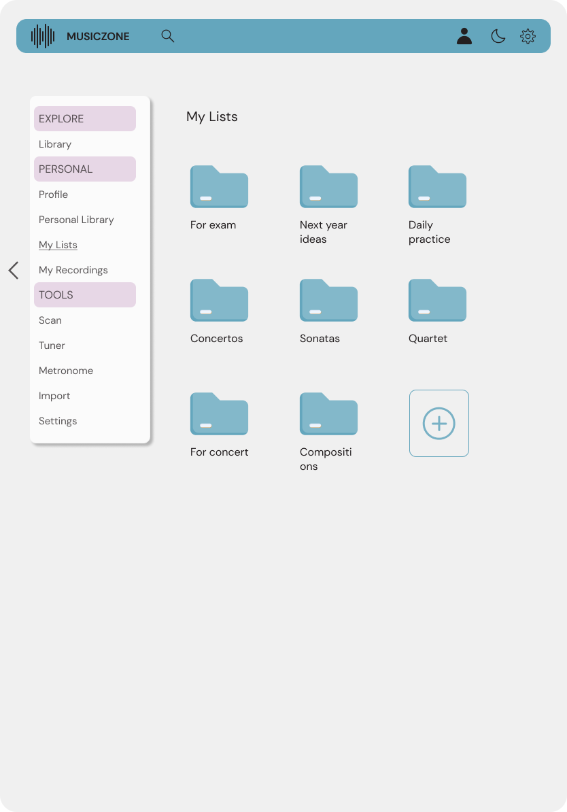
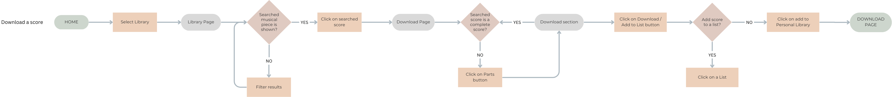
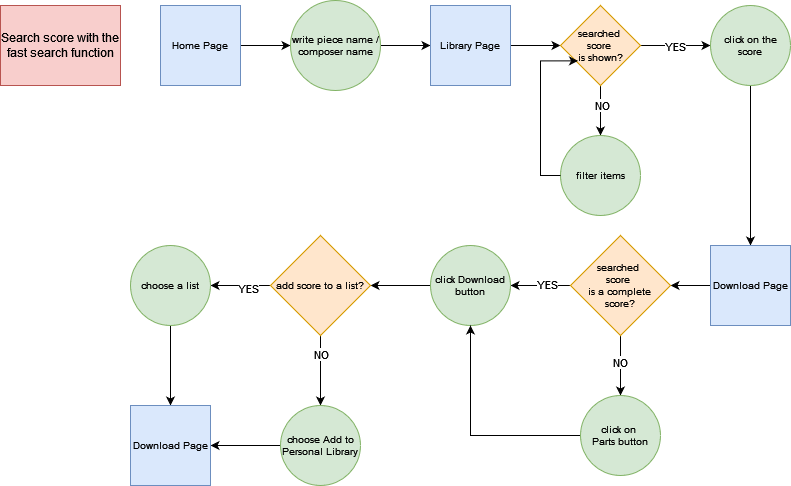

 



MUSICZONE is an app that helps classical musicians carry all the scores they need inside one device. The app has access to a library, which allows the user to search and download the music sheet they need, as well as a scan tool, which gives the opportunity to scan and create a personal library, or upload the scanned sheet to the app’s library.
Classical musicians need to carry multiple music sheets many times when they go to rehearsal. Not to forget is that they already need to carry their instrument in many cases. This can become very uncomfortable when they have a lot of scores to carry around, and it can even affect their physical well-being, leading to back problems.
A tablet is much more comfortable to carry around, compared to many musical sheets. The focus of this app is to allow access to a library that includes many music sheets, which can be downloaded and accessed offline, when the user needs to. The option to also scan or import a musical score enables the musician to complete their library with any score they need. This way, the musician needs to carry around only a tablet instead of multiple physical paper sheets with all the notes they need.
I created a list of questions that helped me better understand the needs of the targeted user group, the professional classical musicians. The outcomes of the first iteration were general ideas regarding what the user of this app would need mostly, like a personal library, the scan tool, and also the possibility to create a practice list, in order to easily access the sheets that are needed for a longer period of time for daily practice.

Download a music score:
Fast search functionality:
